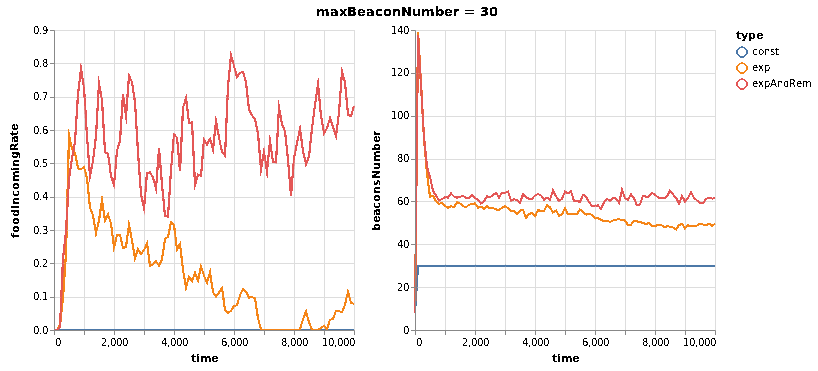

Table of Contents
1 Aim of the project
This project is inspired by the work done in Collaborative foraging using beacons. Once implemented the same algorithm in an obstacle free environment, this project will focus on the effects of 2 main changes:
1)A variation on the probability of deploying and removing beacons: the algorithm has a constant pDeploy = 0.9 until maxBeaconNumber is reached. At this threshold no more beacons can be deployed. This poses two problems: first off, if maxBeaconNumber is too low, the initial exploration can't cover enough environment to reach the food. Secondly, if the beacons's network is broken into disconnected pieces and maxBeaconNumber is reached with no accessible beacon that can be removed, the algorithm grinds to a halt. To ease this limitations a new pDeploy is used. It takes the functional form of \[ pDeploy(beaconsNumber) = \exp{-\frac{beaconsNumber}{maxBeaconNumber}} \]. Such function allows to get over the threshold if it's set too low and allows the creation of new beacons at any time at a cost of an increasingly small probability of deployment. Then a second variation is introduced to solve the problem of getting stuck in local maxima. This issue arises once a region of the beacons's network is separated from the rest of the connected part. Said region collapses on it's local maximum and every beacon deployed will be subsequently be removed as is obsolete( the maximum has the same neighborhood and has higher values of pheromones). The only way to get out of this situation is to hope that the network gets reconnected by the ants which aren't trapped inside the maximum. The proposed solution works by taking into account a locality estimator called localityCount defined as the time spent without changing the beacon chosen as best candidate inside canRemove. With probability $ pRemove( localityCount) = 1 - ( 1 - \frac{localityCount}{\tau})(0.2))$ the currBeacon is removed even if canRemove returns false. This allows the removal of local maxima. If said maximum is the only beacon in its neighborhood, a new exploration will start with beacons with 0 as pheromone values wich can't be removed until they reconnect with the rest of the network.
- The implementation of a finite beacon's lifetime.This setting reflects a more realistic environment where beacons are powered
by batteries and their range decreases with time. A beacon timescale is introduced, that sets the period in which the beacon's range will decrease exponentially until a minumum range that, once reached, marks the end of the beacon's activity. The stability and performance of the algorithm will be tested at various values of beacon's timescale.
2 Model's description
The environment simulated is a bounded continuous field of size 100x100 in arbitrary units of length. Inside this field there's a fixed nest located at (10, 10) from the top left corner and a fixed source of food located at (90, 90). The agents inside the model are ants that start the simulation at nest's position. At each timestep every agent follows the algorithm described in the previous article. For implementation reasons hole timesteps are populated by ants's actions, half timesteps are populated by beacons's actions (they let the pheromones evaporate and, if required, they shrink their range and deactivate themselfs if the end of their lifetime is reached). The desired collective behaviour is the emergence of an optimized path between food and nest represented by a network of beacons which stores the values of pheromones used to guide the agent's movement.
As a general idea of what happens inside a typical simulation, few phases can be identified: 1)Searching phase: in the first part of the simulation the fact that every beacon has a 0 foraging pheromone allows them to be unremovable, so the ants cover the map with an irregular grid of beacons until the system runs out of deployable beacons and it almost halts itself of food is found. 2)Reinforcing the best path: once food is found, ants start to get back to the nest, creating a sub-optimal path that will be optimized by straightening beacon's position through move actions or taking paths that have less beacons inside them 3)Eventually through the removal or movement of the beacons the network will be divided into disconnected parts. If the isolated beacon don't have any ant inside they are left on their own. If ants are trapped inside this disconnected network of beacons they can either collapse the network on the local maximum or reconnect to the rest of the beacons.
The performances of the model are measured with this metrics:
- Mean travel length : time needed to start from the nest and come back with food.
- Food incoming rate: the ammount of food collected in an interval of 100 timesteps.
- Total food recovered at a fixed time.
3 Implementation of the model in MASON
MASON provides a class SimState as core engine to develop simulations. Inside there's a scheduler to handle agents's actions and a good random number generator to handle the stochastic side of the model. ForagingWithBeacons extends this class including all the Continuous2D fields needed to locate agents, beacons, nest and food. All the key elements of the model are classes that implement the Steppable interface required by the scheduler's methods. An ausiliary agent called statAgent is used to gather and print out all useful data about the simulation.
A graphical interface is then developed through various portrayals located inside MASON libraries to see in real time the model's behaviour, to change on the fly few key parameters. The rapresentation of every element of the simulation is inside "Running the simulation" chapter.
4 Running the simulation
Once downloaded MASON and the accessory libraries from the ufficial website, follow their instructions to set correctly the CLASSPATH in your environment and add to it the path of your cloned repository of this project. Compile all java classes inside the project and from here there are two options to run simulations. There's a command line version that runs simulations as
java ForagingWithBeacons --time 100000 --until 100000 --repeat 10 --parallel 4
where various flags can control the number of simulations and their duration. If this code is used, inside ./data/ will be generated a settings.txt file containing all parameters's values and there'll be a file for every simulation with its seed as name. The following informations are stored every 100 timesteps:
| position | content | position | content | position | content | position | content |
|---|---|---|---|---|---|---|---|
| 1 | BeaconLifetime | 6 | beaconsNumber | 11 | exploration | 16 | wanderPh |
| 2 | maxBeaconNumber | 7 | avgPathLength | 12 | startExploration | 17 | randomMove |
| 3 | time | 8 | foundFood | 13 | beaconMov | 18 | foodPerAnt |
| 4 | foodIncomingRate | 9 | foundHome | 14 | followPh | 19 | sqFoodPerAnt |
| 5 | foodRecovered | 10 | beaconRem | 15 | beaconDep | 20 | seed |
Fields from 8 to 18 are the distribution of actions taken by all ants. FoodPerAnt and sqFoodPerAnt are the mean and the mean of the square of food recovered over the ants. The square is a measure of variance between single ants.
A second version is launched with
java ForagingWithBeaconsUI
Here a graphical interface is created with a console that grants access to few relevant model's parameters and allows to start, pause and stop the simulation. Every element of the simulation is clickable and inside the inspector panel few parameters are shown.
The graphical representation of every component of the model is as it follows:
- Beacons are represented as hexagons with a circle around them with the size of their range. The hexagon's color reflects the value of foraging pheromone while the outer circle's color reflects the value of ferrying pheromone. If the value of pheromones is 0 the hexagon or the outer circle is red as a visual cue to mark the fact that either the beacon is separated from the rest of the network or the propagation of foraging pheromone hasn't started yet(as no food has been found yet).
- Ants are dots and their color reflects their status: they are yellow if they don't carry food or red if they do.
- Nests are represented as magenta ovals.
- Food sources are cyan ovals.
5 Beyond a fixed upper limit of deployable beacons
As previously stated, this first section has been developed to alleviate the problems that stop the agents from creating and optimizing the path between food and nest. The main focus is on the first and third phase descripted inside the "model description" chapter. The first idea is to make sure that ants can deploy enough beacons to find the food, keeping a notion of upper limit of beacons deployable in a less strict sense. By choosing \(pDeploy(beaconsNumber) = \exp(-\frac{beaconsNumber}{maxBeaconNumber})\) is ensured that there's always a chace of deploying a new becon, but the probability of it happening drops very significantly as the number of current beacons deployed grows. Inside the simulations this variation of the algorithm will be identified with the "exp" label.
A second variation is introduced to avoid of being stuck in local maxima. As widely discussed inside the "aim of the project" chapter, the probability of removing a beacon even if it doesn't have the requirements set inside canRemove helps to mitigate this issue. The shape of the functional form of pRemove allows for a quite good tollerance for increasingly high values of localityCount. This variation of the algorithm is labelled "expAndRem".
The performances of the article's model (labelled "const") and the two variations can be viewed in this gif:  As predicted the "const" variation is not able to create a path